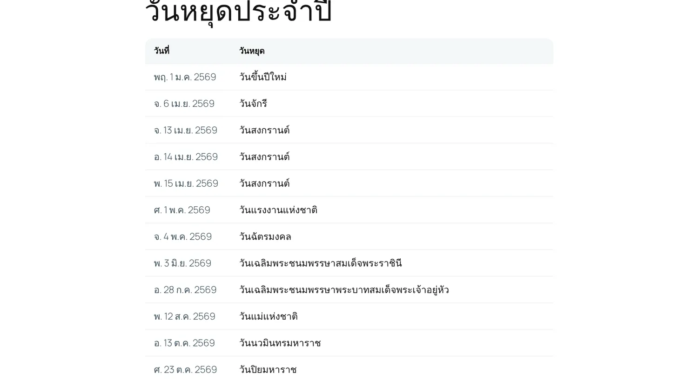
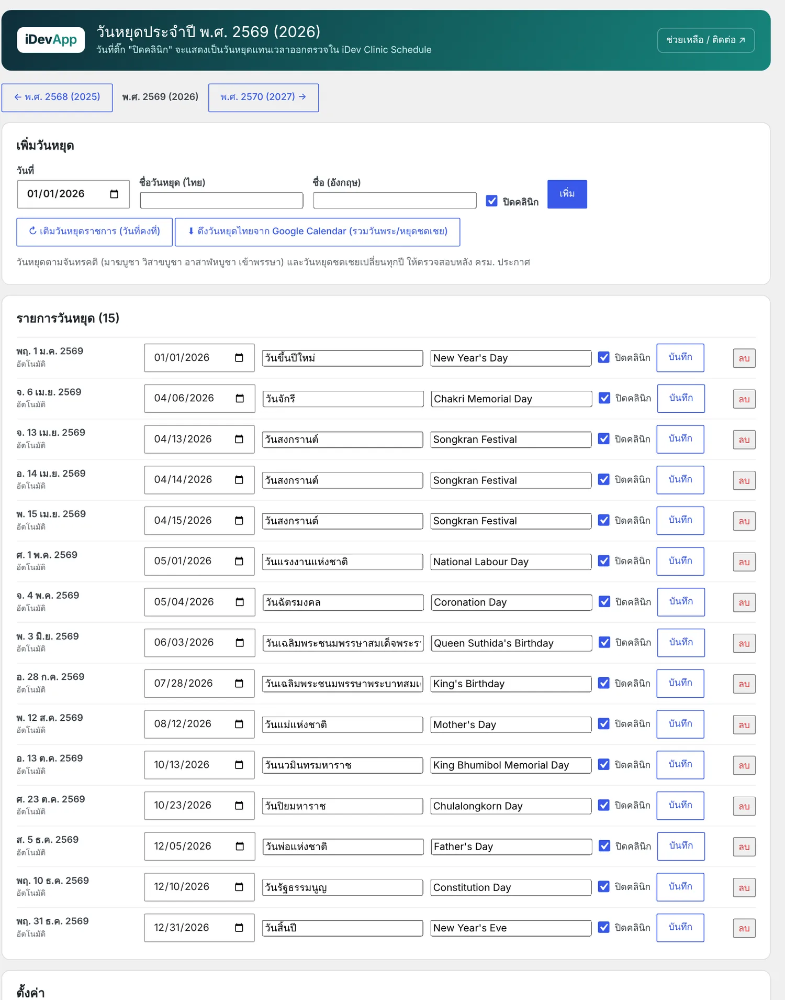

1ความสามารถ

[idev_holidays]- เติม วันหยุดราชการวันที่คงที่ ให้อัตโนมัติเมื่อถึงปีใหม่
- ดึงวันหยุดไทยจาก Google Calendar (server ต้องออกอินเทอร์เน็ตได้)
- ติ๊ก ปิดคลินิก รายวัน → ตารางออกตรวจแสดงเป็นวันหยุด และระบบนัดหมายไม่เปิดจองวันนั้น
- เพิ่มวันหยุดพิเศษเอง ชื่อไทย/อังกฤษ
2เริ่มต้นใช้งาน
- เติมวันหยุดของปี
iDevApp › วันหยุดประจำปี เลือกปี กด เติมวันหยุดราชการ (วันที่คงที่) และ/หรือ ดึงวันหยุดไทยจาก Google Calendar

iDevApp › วันหยุดประจำปี - ตรวจและติ๊กปิดคลินิก
ตรวจรายการ แก้ชื่อหรือวันที่ แล้วติ๊ก ปิดคลินิก สำหรับวันที่หยุดให้บริการ
- เพิ่มวันหยุดพิเศษ
ใช้แบบฟอร์ม เพิ่มวันหยุด ด้านบน เช่น วันหยุดชดเชยหรือวันหยุดพิเศษตามมติ ครม.
วันหยุดตามจันทรคติ (มาฆบูชา วิสาขบูชา อาสาฬหบูชา เข้าพรรษา) และวันหยุดชดเชยเปลี่ยนทุกปี ให้ตรวจสอบหลัง ครม. ประกาศ
3Shortcode
| Shortcode | ผล |
|---|---|
[idev_holidays] | รายการวันหยุดของปีนี้ |
[idev_holidays year="2026" only_closed="1"] | เฉพาะปี 2026 และเฉพาะวันที่ปิดคลินิก |